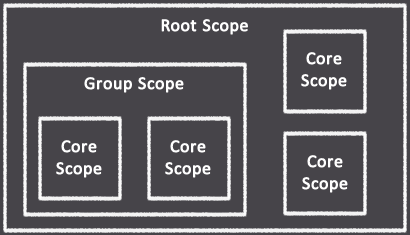
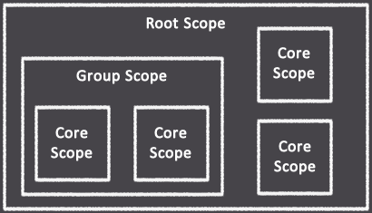

xT50 :: Scope Statements
Scopes are used to implement a multi-core design (or what could also be thought of as a multi-threaded application).
A "root core" is a core not belonging to a group, whereas a core belonging to a group is intuitively called a "group core."
Cores in the same group share a single L2 cache, which is the primary reason for defining group cores. Put another way,
multiple application threads can share data between them if the executing cores are in the same group.
There are three scope types: root, group, and core. There is only one root scope and it cannot be declared explicitly. All statements not defined in a group or core scope will, by default, be implicitly defined in the root scope.

A scope statement signifies the beginning of a group or core scope. The statements that follow a scope statement are considered to be part of the scope that was last defined. The only exception to this rule would be a subsequent scope statement, which in itself is not part of any scope.
A scope statement consists of the scope name followed by the scope operator, with no spaces in between. The scope name format is different for root cores and group cores. For a root core, the scope name is simply the name given to a core. For a group core, the scope name contains the group name and the core name, joined together with a period. The scope name may contain letters, numbers and underscores, in any combination. Scope names are case-sensitive.
The following example illustrates two root cores, one defined implicitly (by default) and the other explicitly, and two group cores belonging to the same group:
In the example above, a total of four program ROM's, and subsequently four cores, will be created. Each of the four cores has its own L1 cache, therefore the values 1, 2, 3, and 4 will be stored in the respective registers of the four cores. However, the two group cores share a common L2 cache and in this example Core0 writes the value 3 to memory address 128, which is then read by Core1 and stored in its R2 register. Note that the NOP (no operation) instruction is needed in this case to ensure the data has been written to memory first as the cores are executing these instructions in parallel.
It is possible to declare a group scope for the purpose of defining a named constant that will be applicable to all cores within a group. To do this, an asterisk (wild card) is used in place of a core name. An example of this is as follows:
Note that only const statements may be used at group scope.
There are three scope types: root, group, and core. There is only one root scope and it cannot be declared explicitly. All statements not defined in a group or core scope will, by default, be implicitly defined in the root scope.

A scope statement signifies the beginning of a group or core scope. The statements that follow a scope statement are considered to be part of the scope that was last defined. The only exception to this rule would be a subsequent scope statement, which in itself is not part of any scope.
A scope statement consists of the scope name followed by the scope operator, with no spaces in between. The scope name format is different for root cores and group cores. For a root core, the scope name is simply the name given to a core. For a group core, the scope name contains the group name and the core name, joined together with a period. The scope name may contain letters, numbers and underscores, in any combination. Scope names are case-sensitive.
The following example illustrates two root cores, one defined implicitly (by default) and the other explicitly, and two group cores belonging to the same group:
SET R1 1
Core0::
Group0.Core0::
Group0.Core1::
Core0::
SET R1 2
Group0.Core0::
SET R1 3
OUT R1 128
OUT R1 128
Group0.Core1::
SET R1 4
NOP
IN R2 128
NOP
IN R2 128
In the example above, a total of four program ROM's, and subsequently four cores, will be created. Each of the four cores has its own L1 cache, therefore the values 1, 2, 3, and 4 will be stored in the respective registers of the four cores. However, the two group cores share a common L2 cache and in this example Core0 writes the value 3 to memory address 128, which is then read by Core1 and stored in its R2 register. Note that the NOP (no operation) instruction is needed in this case to ensure the data has been written to memory first as the cores are executing these instructions in parallel.
It is possible to declare a group scope for the purpose of defining a named constant that will be applicable to all cores within a group. To do this, an asterisk (wild card) is used in place of a core name. An example of this is as follows:
Group0.*::
Group0.Core0::
Group0.Core1::
const GROUP_CONST = 123
Group0.Core0::
SET R1 GROUP_CONST
Group0.Core1::
SET R1 GROUP_CONST
Note that only const statements may be used at group scope.